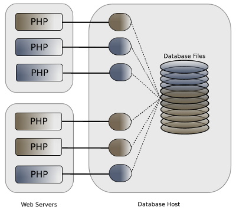
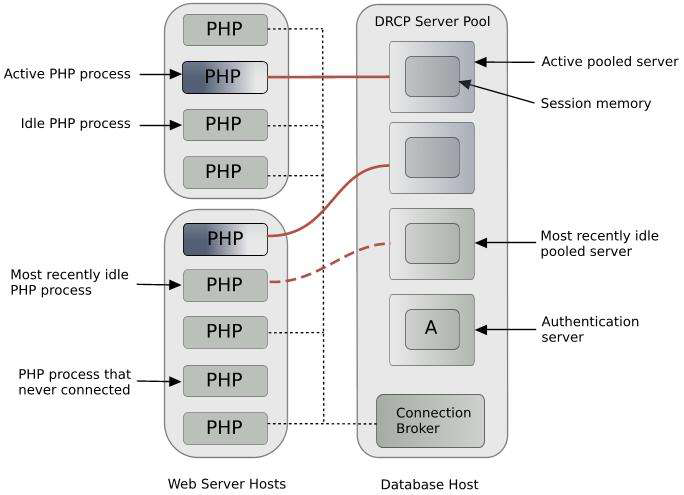

2 Getting Started
This chapter explains how to install and test Oracle Database and PHP environment.
This chapter contains the following topics:
2.1 What You Need
To install your Oracle Database and PHP environment, you need:
-
Oracle Database 12cR1
-
Apache Web Server. On Linux this is commonly available in the package repository.
-
PHP 5.3 or later. Several recent Linux distributions now include this version as a package.
-
A text editor for editing PHP files. A code editor such as NetBeans PHP edition with a debugger is ideal, but not required.
2.2 Installing Oracle Database
If you have not already installed Oracle Database on your computer, you must do so. The sample data used in this tutorial is installed by default. It is the HR component of the Sample Schemas.
For information about installing Oracle Database, see the installation guide for your operating system:
-
Oracle Database Installation Guide for Microsoft Windows
-
Oracle Database Installation Guide for Linux
This section contains the following topics:
See Also:
-
Oracle Database Sample Schemas guide for information about the
HRsample schema. -
Oracle SQL Developer web page
http://www.oracle.com/technetwork/developer-tools/sql-developer/overview/index.html
2.2.1 Unlocking the HR User
The PHP application connects to the database as the HR user. You may need to unlock the HR account before it can be used. Use SQL*Plus or SQL Developer to unlock the HR user.
This section contains the following topics:
2.2.1.1 Unlocking the HR User Using a Command Line
Unlock the HR user using a command line as follows:
SQL> source /u01/app/oracle/product/12.1/bin/oracle_env.sh SQL> sqlplus system/system_password SQL> alter user hr identified by <password-for-hr> account unlock;
where, system_password is the password you entered during database configuration, and password-for-hr is the password for the HR account.
2.2.1.2 Unlocking the HR User Using SQL Developer:
To unlock the sample user account using SQL Developer:
-
If you have not already created a database connection for the SYSTEM user, do so.
-
Open the database connection for the SYSTEM user.
-
In the Connection navigator under the connection for the SYSTEM user, expand the Other Users node.
-
Under Other Users, right-click the node for the HR user and select Edit User.
-
In the Create/Edit User dialog box, uncheck (deselect) the option Account is Locked.
-
For New Password and Confirm Password, enter the password that you want for the
HRuser. -
Uncheck (deselect) Password expired (User must change next login).
-
Uncheck (deselect) Account is Locked.
-
-
Click Apply to alter the HR user so that the account is unlocked and not expired.
-
Click Close to close the dialog box.
For further information about unlocking an Oracle database account, refer Oracle Database 2 Day DBA.
See Also:
-
Oracle Database documentation
http://www.oracle.com/technetwork/indexes/documentation/index.html
2.2.2 Database Resident Connection Pooling
The AnyCo sample application will use Database Resident Connection Pooling (DRCP) to show how a PHP application can scale to support many users.
PHP cannot be assumed to be thread safe and is typically run in a multi-process mode, for example with the Apache web server's pre-fork model or with FastCGI. Sharing Oracle connections between active and idle PHP processes is not possible in the mid-tier because there is no interprocess communication. DRCP works because the sharing is handled by the database host machine. This also allows connection resources created by multiple mid-tier hosts to be shared.
For best performance it is common for PHP OCI8 applications to use "persistent" database connections. When PHP has completed an application script and sent its output to the web user's browser, the script's underlying DB connection is not closed. The connection remains cached in the still-running, now idle PHP/Apache process. It can be reused by this PHP process in any subsequent PHP script connecting with the same database credentials. This has great performance benefits. However without DRCP, when there are large numbers of PHP processes the open database connections may use a large amount of database host memory. This is despite many connections being idle due to the user's "think-time" between making web page requests, or while the PHP script runs non-database operations.
DRCP allows PHP applications to efficiently use database host memory to support large numbers of web users. DRCP allows database resources to be used by only those web users currently doing database operations. Benchmarks have shown DRCP can support tens of thousands of web users on small, commodity Linux database hosts.
Figure 2-1 Without DRCP, Idle Persistent Connections from PHP still Consume Database Resources.
DRCP overcomes the database host memory pressure by maintaining a small pool of database server processes on the host. These can be shared by all the PHP database connections across all PHP processes and mid-tier servers when they are needed.
Figure 2-2 DRCP Architecture
If a PHP script connects to the database but there is no pooled server process available, then it will wait until one is free. This prevents the database from being overloaded and allows applications to continue running.
Once the DRCP pool is started, applications can choose at runtime whether to use it or not. This is indicated in the PHP OCI8 connection string. Typically only short lived, similar kinds of tasks should use DRCP. Batch processes should not use the pool.
The DRCP pool can be used in two variants. The basic method is that only the processes are reused. The second method increases performance by also reusing the "session" memory associated with each process. In PHP, only "persistent" connections use the latter method. For web applications like PHP where each script is part of a single application, this session memory sharing is generally perfectly acceptable. However care must be taken that any retained session settings such as the date format do not occur unexpectedly and that they do not constitute an information security leak. DRCP allows the pool to be virtually sub-partitioned to reduce any issues like this.
PHP OCI8 applications use the oci_pconnect() call to create a persistent database connection. Applications can also connect to Oracle using oci_connect() or oci_new_connect(), which create non-persistent connections. The oci_new_connect() function always returns a new, transactionally independent connection resource each time it is called. The oci_connect() and oci_pconnect() functions will return their respective same PHP resource if a running script calls them multiple times with the same connection credentials. For each connection method, a rollback occurs at the end of each script, if necessary.
There are also differences in behavior between the three functions depending on whether DRCP is being used.
Without DRCP, a persistent connection remains open even when the PHP script has completed. A subsequent script connecting with the same credentials can immediately reuse that connection. This is fast but the database host must have enough memory to maintain the connections from each PHP process even when the processes are idle. The oci_connect() and oci_new_connect() functions do not retain the underlying connection to the database after the PHP script completes. This makes connection slower to establish but memory use on the database host is capped by the number of active web users.
When PHP connections uses DRCP, all three OCI8 connection functions benefit from using established DRCP server processes from the DRCP pool. When each script finishes (if not earlier), its database pooled server is returned to the DRCP pool for reuse. A lightweight connection to the DRCP broker is retained, which aids re-connection performance. An oci_pconnect() function will reuse the process session memory, provide more efficiency and higher scalability. Each oci_connect() and oci_new_connect() call will recreate the Oracle session memory in the reused DRCP pooled process.
More information on DRCP and PHP is in the white paper:
http://www.oracle.com/technetwork/topics/php/whatsnew/php-scalability-ha-twp-128842.pdf
2.2.3 Starting the DRCP Pool
The DRCP pool can be controlled in SQL*Plus with the pre-supplied PL/SQL DBMS_CONNECTION_POOL package.
To start the pool on Oracle Linux, open a terminal window and connect as the root user:
# su -
Now, su to the Oracle account:
# su - oracle $ source /u01/app/oracle/product/12.1/bin/oracle_env.sh
Run SQL*Plus with the SYSDBA system privilege and invoke the DBMS_CONNECTION_POOL.START_POOL() procedure:
$ sqlplus / as sysdba SQL> execute dbms_connection_pool.start_pool()
The pool will now run with its default parameters.
To stop the pool, run:
SQL> execute dbms_connection_pool.stop_pool()
If DRCP is running when the database is restarted, then the pool will automatically restart.
Pool parameters can be changed with DBMS_CONNECTION_POOL.ALTER_PARAM(), for example:
SQL> execute dbms_connection_pool.alter_param(null, 'MAXSIZE', '10');
The pool should be restarted after changing parameters.
The current pool settings can be viewed by querying Oracle's data dictionary:
select * from DBA_CPOOL_INFO;
The overall DRCP Pool statistics can be seen in
select * from V$CPOOL_STATS;
By observing the statistics over time you can decide how to tune the pool parameters.
Each DRCP database connection can specify an arbitrary "connection class". In PHP the connection class can be configured in PHP's php.ini initialization file or can be set at run time. See “Post PHP Installation Tasks on Windows and Linux”. The connection class helps partition the DRCP pool for different use cases.
The statistics for each connection class can be seen using:
# select * from V$CPOOL_CC_STATS;
Not setting a connection class results in reduced sharing of the DRCP pool resources. For general application, if V$CPOOL_CC_STATS shows a large number of system generated connection class names, then check that your PHP configuration files on each mid tier server is correctly setting the connection class.
The DRCP pool is sharable across all enabled applications, including those written in PHP, Perl, and Python. Some tools like SQL*Plus are not DRCP enabled. If you use a DRCP connection with SQL*Plus you will see entries in V$CPOOL_CC_STATS with the class name SHARED. SQL*Plus will reuse the DRCP pool processes but will have to recreate each process's session memory.
When you have built the AnyCo application and run it, you can examine the monitoring views to see DRCP in action.
Related Topics
2.3 Installing Apache HTTP Server
The Apache HTTP server handles incoming user page requests and invokes PHP to generate the application's HTML markup.
For information about downloading, installing, and using the Apache HTTP server, see the Apache HTTP Server Project page at: http://httpd.apache.org/
This section contains the following topics:
2.3.1 Installing Apache on Windows XP
Note:
Windows XP is no longer officially supported by Microsoft. For the most recent Windows installation information, see the Apache HTTP Server Project page at: http://httpd.apache.org/
PHP 5.3.6 is installed using the FastCGI model in Windows. Perform the following steps to obtain Apache HTTP Server for Windows:
You can use the Start menu option to start Apache. This opens a console window showing any error messages. Error messages may also be written to C:\Program Files\Apache Software Foundation\Apache2.2\logs\error.log.
You can also use the ApacheMonitor utility to start Apache. If you chose to install Apache as a service for all users, it will appear as an icon in your System Tray.
If you have errors, double check your httpd.conf file
2.3.2 Installing Apache on Linux
Note:
Some information in this section refers to an old version of Apache. For the most recent installation information, see the Apache HTTP Server Project page at: http://httpd.apache.org/
This section describes how to install Apache HTTP Server on Linux.
The file name and extraction directory are based on the current version. Throughout this procedure, ensure you use the directory name for the version you are installing.
Apache is typically already installed on Linux or directly available in package repositories.
This section contains the following topics:
2.3.2.2 Manually Installing Apache on Linux
This section describes how to manually install Apache HTTP Server on Linux. The file name and extraction directory are based on the current version. Throughout this procedure, ensure you use the directory name for the version you are installing.
Perform the following steps to install the Apache HTTP Server:
If you do not want to install and run Apache as a privileged user, set --prefix to a directory such as $HOME/apache. Then, after installation completes, you will also need to edit httpd.conf and modify the Listen parameter to change the port that Apache listens on, because non-privileged users cannot use the default port 80.
Apache can be started with the apachectl script:
# /usr/local/apache/bin/apachectl start
Stop Apache with:
# /usr/local/apache/bin/apachectl stop
2.3.2.3 Setting the Oracle Environment for Apache on Linux
The Oracle environment must be set correctly before starting Apache so that PHP OCI8 works correctly. In general you should set the same variables that are set by the $ORACLE_HOME/bin/oracle_env.sh script. The necessary environment variables can be set in Apache's environment configuration file.
On Oracle Linux with the default httpd package, this is /etc/sysconfig/httpd. If you installed your own Apache using the instructions in the previous section it is /usr/local/bin/envvars. Edit the file and add these lines:
export ORACLE_HOME=/u01/app/oracle/product/12.1 export LD_LIBRARY_PATH=$ORACLE_HOME/lib:$LD_LIBRARY_PATH
Stop and restart Apache so the environment variables are in effect.
2.3.2.4 Setting up a User Directory for the Example Project on Linux
The PHP files that will be created later need to be stored in a directory accessible by Apache. One possible location is Apache's Document root directory /var/www/html (or /usr/local/apache/htdocs, if you installed Apache manually). However, you may find it easier to give Apache access to a sub-directory of your home directory.
-
Login as your normal user and make a working directory:
mkdir $HOME/public_html
You will also need to let the Apache processes access your files, for example with:
chmod 755 $HOME $HOME/public_html
-
Edit the
httpd.conffile:-
For Oracle Linux, edit
/etc/httpd/conf/httpd.confand locate themod_userdir.csection. Change it to:<IfModule mod_userdir.c> # # UserDir is disabled by default since it can confirm the presence # of a user name on the system (depending on home directory # permissions). # #UserDir disable # # To enable requests to /~user/ to serve the user's public_html # directory, remove the "UserDir disable" line above, and uncomment # the following line instead: # UserDir public_html </IfModule>
-
If you installed Apache manually, edit
/usr/local/apache/conf/httpd.confand locate the line:Include conf/extra/httpd-userdir.conf
Make sure it is uncommented by removing a leading pound sign (
#), if one exists.
-
-
Restart Apache
This enables the Web browser to serve files from the
$HOME/public_htmldirectory of users. For example, if you login as 'chris' then PHP files created in$HOME/public_htmlwould be accessible by theURL http://localhost/~chris/If you decide to create the PHP project files in
public_htmlyou will need to change any URLs mentioned later in this manual. For example usehttp://localhost/~user/wherever the manual says to usehttp://localhost/.
2.5 Installing PHP
The application in this manual uses PHP 5.3, which has the OCI8 1.4 extension for Oracle Database. New features in PHP 5.3 and OCI8 1.4 are used. PHP's GD extension is used in “Using JSON and Generating a JPEG Image”.
This section contains the following topics:
Related Topics
2.5.1 Installing PHP on Windows
Note:
Some information in this section may refer to an old version of PHP. For the most recent information, see the Oracle Technology Network PHP site (http://www.oracle.com/technetwork/database/database-technologies/php/) for Downloads, Documentation (including white papers and FAQs), Community (discussion forum and blog), and other resources.
This section describes how to install PHP on Windows.
The file name and extraction directory are based on the current version. Throughout this procedure, ensure you use the directory name for the version you are installing.
You must be the administrator user to install PHP. To install PHP, perform the following steps:
Related Topics
2.5.2 Installing PHP on Linux
Note:
Some information in this section may refer to an old version of PHP. For the most recent information, see the Oracle Technology Network PHP site (http://www.oracle.com/technetwork/database/database-technologies/php/) for Downloads, Documentation (including white papers and FAQs), Community (discussion forum and blog), and other resources.
If your Linux distribution has PHP 5.3 packages it is easiest to use them. Alternatively you can build PHP from source code.
This section contains the following topics:
2.5.2.1 Installing PHP and OCI8 on Oracle Linux
On Oracle Linux install PHP 5.3 with:
# yum install php53 php53-gd
or
# up2date php53 php53-gd
If you do not have an Oracle Unbreakable Linux Network (ULN) subscription, you will need to install OCI8 manually as covered in the next section “Adding the OCI8 Extension to an Existing PHP Installation on Linux”.
If you are a subscriber to ULN then you have access to an OCI8 RPM in the Oracle Software for Enterprise Linux 5 channel. Add this channel and then run:
# yum install php53-oci8-11gR2
or
# up2date php53-oci8-11gR2
Installing the php53-oci8-11gR2 package will also install Oracle Instant Client libraries.
Restart Apache. If there are errors, they will display on your screen. They may also be written to /var/log/httpd/error_log. If you have problems, double check your httpd.conf and php.ini files.
2.5.2.2 Adding the OCI8 Extension to an Existing PHP Installation on Linux
If you have an existing PHP 5.3 installation without OCI8 you can add the latest PHP OCI8 extension by using PHP's PECL library, http://pecl.php.net/oci8. In general this can be used to add OCI8 to PHP 4.3.9 onwards. Note the example code in this manual requires PHP 5.3.
You will need PHP development files such as the phpize command. On Oracle Linux this can be found in the php53-devel package.
To install OCI8 perform the following steps:
PHP OCI8 is built as a shared library. This makes it easy to upgrade without interfering with the rest of the PHP installation.
To get PHP to load the library, edit /etc/php.ini and add:
extension=oci8.so
2.5.2.3 Manually Building PHP and OCI8 Together on Linux
This section describes how to build PHP from source code on Linux. The file name and extraction directory are based on the current version. Throughout this procedure, ensure you use the directory name for the version you are installing.
The instructions here result in a PHP binary with the OCI8 extension statically built in. A variant you might want to consider is to build PHP without OCI8, and then add OCI8 from PECL, as described in the previous section.
Perform the following steps to install PHP:
2.6 Testing the PHP Installation
This section contains the following topics:
2.6.1 Checking PHP Configuration with phpinfo()
First, review the Apache error file error_log (in /var/log/httpd, /usr/local/apache/logs or C:\Program Files\Apache Software Foundation\Apache2.2\logs) to confirm there are no startup errors from Apache or PHP.
Decide where you want to create the PHP project files. This directory should be Apache accessible. For example on Linux you could use the Apache document root (/var/www/html or /usr/local/apache/htdocs) or $HOME/public_html if you configured a user directory. On Windows use the Apache document root C:\Program Files\Apache Software Foundation\Apache2.2\htdocs
In an editor create a new PHP file pi.php containing:
<?php
phpinfo();
?>
Load this file in a browser:
http://localhost/pi.php
Check the following:
-
If you use a non default port such as 8888 change the URL to include it, for example
http://localhost:8888/pi.php -
If your file is in
$HOME/public_htmlthen change the URL to include your user name, for examplehttp://localhost/~chris/pi.php -
Or use both, for example
http://localhost:8888/~chris/pi.php
You should see a page like:
If you see the text of the file echoed back it means you did not configure Apache to send PHP files to PHP. Apache's http.conf file needs a line AddType application/x-httpd-php .php on Linux or AddHandler fcgid-script .php on Windows.
Correct phpinfo() output shows the php.ini location and if it was loaded. If it shows no php.ini loaded, then revisit some of the earlier steps, copy a sample php.ini file to the correct location and follow the steps in the section “Post PHP Installation Tasks on Windows and Linux”.
Scroll down to the OCI8 section. You should see
If there is no OCI8 section, check that you installed OCI8. If you installed it as a shared library, check php.ini has extension=oci8.so or extension=php_oci8_11g.dll on Windows, and that the phpinfo() output shows extension_dir set to the directory where the OCI8 library was installed.
Related Topics
2.6.2 Testing PHP Connections to Oracle
To check that the OCI8 extension works, create a new PHP file testoci8.php containing:
<?php
$c = oci_connect('hr', 'welcome', 'localhost');
if (!$c) {
$m = oci_error();
trigger_error('Could not connect to database: '. $m['message'], E_USER_ERROR);
}
$s = oci_parse($c, "SELECT * FROM employees");
if (!$s) {
$m = oci_error($c);
trigger_error('Could not parse statement: '. $m['message'], E_USER_ERROR);
}
$r = oci_execute($s);
if (!$r) {
$m = oci_error($s);
trigger_error('Could not execute statement: '. $m['message'], E_USER_ERROR);
}
$r = oci_fetch_all($s, $res);
if (!$r) {
$m = oci_error($s);
trigger_error('Could not fetch rows: '. $m['message'], E_USER_ERROR);
}
echo "<table border='1'>\n";
foreach ($res as $row) {
echo "<tr>\n";
foreach ($row as $item) {
echo " <td>".($item!==null?htmlentities($item,
ENT_QUOTES):" ")."</td>\n";
}
echo "</tr>\n";
}
echo "</table>\n";
?>
Everything between the <?php ?> tags will be processed by PHP and its output sent to the user's browser. Text outside of the tags will be sent to the user's browser verbatim. This includes leading and trailing white space. Files can have multiple sets of tags. Some applications use this to embed snippets of PHP inside HTML content. However a PHP-centric application will commonly use PHP echo or print statements to print out any needed HTML tags.
How the OCI8 function calls work is described in the section “General Example of Running SQL in PHP OCI8” and throughout the remainder of this manual.
Load the following file in a browser:
http://localhost/testoci8.php
Depending how you installed Apache, you may need to use one of these alternatives:
-
http://localhost:8888/testoci8.php -
http://localhost/~chris/testoci8.php -
http://localhost:8888/~chris/testoci8.php
You should see:
If you get a blank screen, check php.ini has display_errors = On. Reload the page and see if there was an error.
If you get an error ORA-28000: the account is locked, then unlock the HR account using the steps given previously in section Unlocking the HR User.
If you get a startup error on Linux like
Warning: oci_connect():OciEnvNlsCreate() failed then check that ORACLE_HOME was set correctly before Apache was started.
If you get an error like ORA-12541: TNS:no listener review the Oracle Database installation log and find the port that Oracle Database listener was installed with. For example if you used 1522 then change the connect call in testoci8.php to:
$c = oci_connect('hr', 'welcome', 'localhost:1522');
If you get an error ORA-01017: invalid username/password, then change the oci_connect() call to use the password you assigned to HR in the section Unlocking the HR User.
2.7 Installing the NetBeans IDE
NetBeans is an extremely popular IDE for PHP web projects and has excellent coding features. A number of programming and mark-up languages, including HTML, JavaScript, and CSS editing features are supported. The latest version of NetBeans understands PHP 5.3 language constructs. NetBeans has PHP framework support, integration with tools like PHPUnit for testing, and integration with PHPDocumentor for documentation generation. It can be configured with an optional PHP debugger extension, which is very useful for PHP development. NetBeans also offers a SQL editor that works with Oracle database.
For more information and to download NetBeans, see https://netbeans.org/.
This section contains the following topics:
Note:
The instructions in these topics refer to NetBeans 7.0. If you plan to use a later version of NetBeans, see the appropriate information at see https://netbeans.org/, and especially the Documentation, Training, and Support page at https://netbeans.org/kb/index.html.
2.7.1 Installing NetBeans IDE on Windows
To install NetBeans IDE on Windows, perform the following steps:
2.7.2 Installing NetBeans IDE on Linux
To install NetBeans IDE on Linux, perform the following steps:
NetBeans will install.
If you do not already have a JDK on your machine, download a bundle of NetBeans 7.0 that includes the JDK from
http://www.oracle.com/technetwork/java/javase/downloads/jdk-netbeans-jsp-142931.html
This bundle does not have PHP enabled. To enable PHP, go to Tools and run Plugins. Go to the Available Plugins tab and select all the options in the "PHP" category. Click Install and agree to the license and location. Restart the IDE when prompted.
2.7.3 Configuring NetBeans on Linux and Windows
Perform the following steps to configure NetBeans on Linux and Windows.
- Start NetBeans by using the desktop icon or menu entry. Navigate to Tools and then Options.
- In the General options choose your preferred browser.
- In the PHP options, go to the General tab.
- Set the PHP 5 interpreter to your PHP command line executable, for example
/usr/bin/php,/usr/local/bin/php, orC:\php-5.3.6\php.exe.